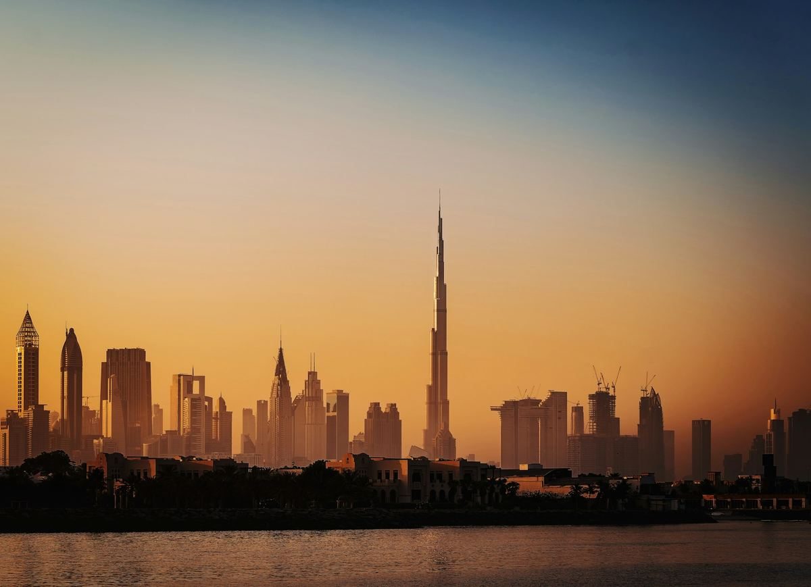

Route 01 · Westbound · Premium
The Dubai Route
US West Coast → Dubai (2–3 days) → nonstop to Mangaluru (IXE)
Fly the westbound way and break the trip in the most theatrical layover city on Earth. Desert safari one day, Burj Khalifa and the souks the next. Then a short hop lands you practically at the wedding. Pricier on the ground, but iconic.
- Leg 1: West Coast → Dubai, ~$1,050–1,450 round trip with 1 stop for the wedding window (checked July 2026). Emirates’ ~16 hr nonstop runs about $2,100 on these dates
- Stopover: 2–3 days: desert safari, Burj Khalifa, beaches, the malls
- Leg 2: Air India Express nonstop Dubai → IXE, ~4 hr, daily. The only route on this page with a direct international flight to IXE
- Timezone trick: Dubai is UTC+4, India UTC+5:30. You do the hard adjustment on the long leg, then barely feel the hop
- Check live fares for these dates →

Book legs 1+2 as one ticket where you can. If they’re separate tickets, leave a full buffer day in Dubai and carry travel insurance.